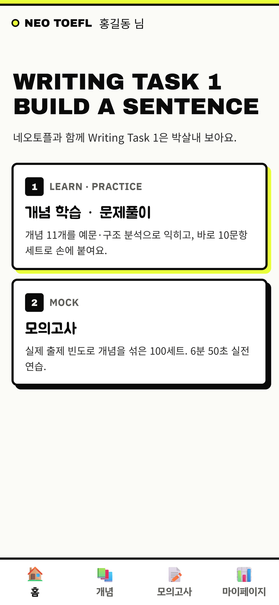
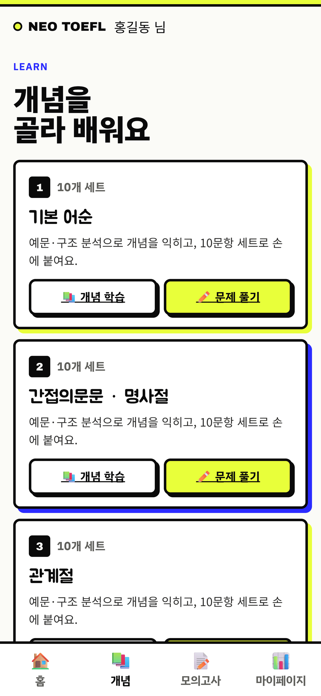
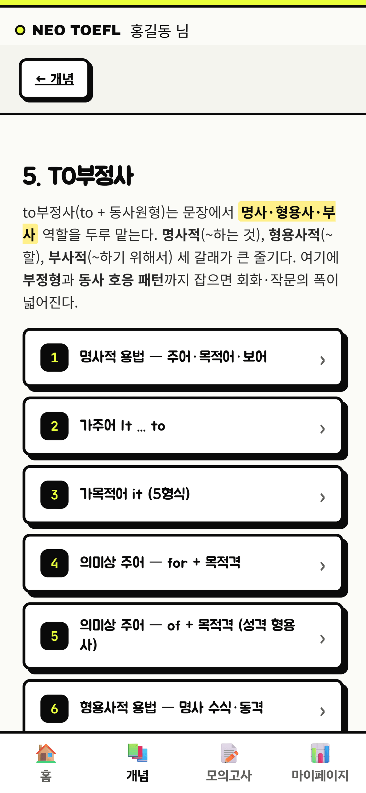
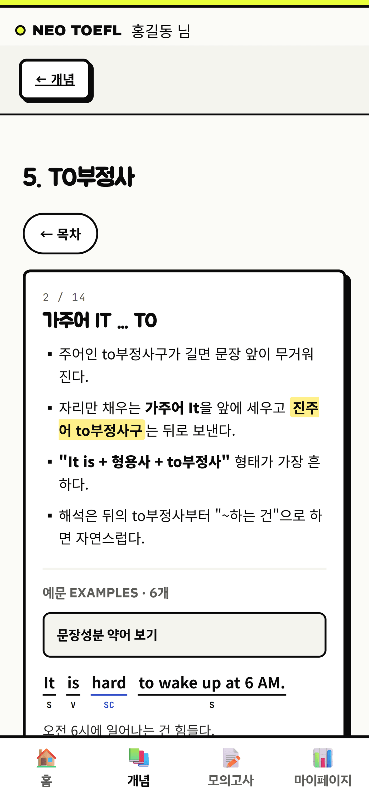
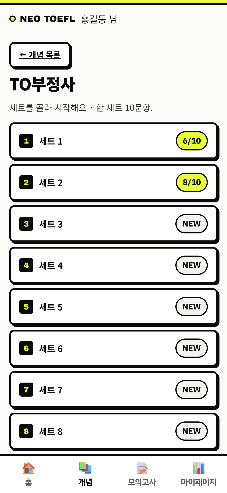
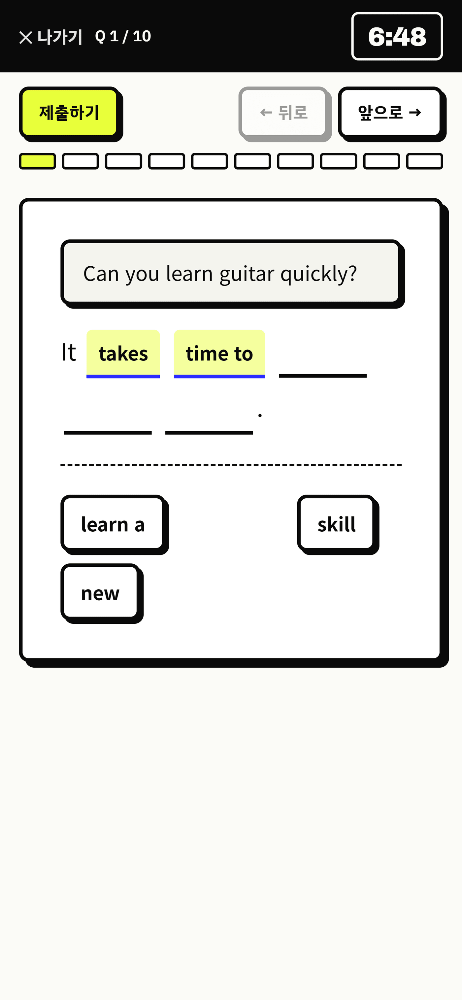
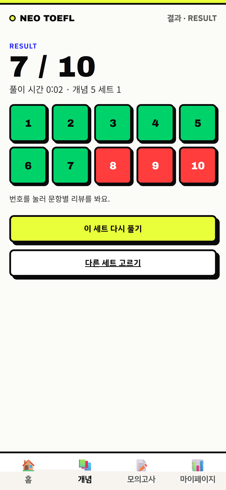
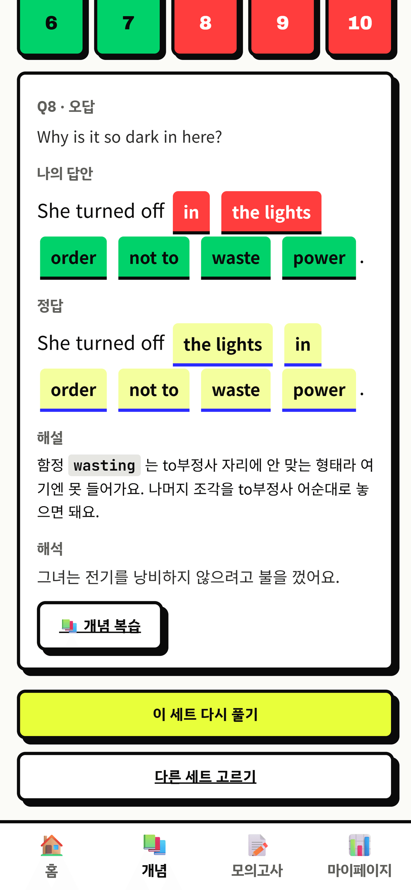
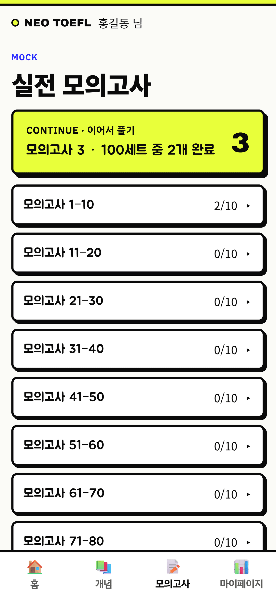
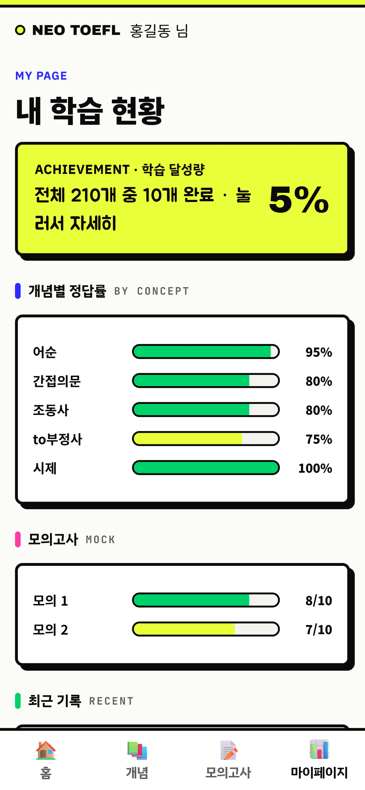

개념 익히고 → 조각 끼워 문장 만들고 → 틀린 건 리뷰. 화면 따라 한 번만 보면 감 잡혀요.
Writing Task 1 홈에는 갈 곳이 두 군데예요.
처음이면 개념 학습부터 가면 돼요.

문장형식·간접의문문·관계절·to부정사·시제·수동태·비교급 등 개념 11개가 있어요. 각 카드에 버튼이 둘이에요:
개념당 10세트 × 10문항이 있어요.

개념을 열면 목차가 먼저 나와요. 궁금한 세부 개념만 골라 들어가면 그 내용만 크게 보여줘요.


세트를 고르면 10문항을 6분 50초 안에 풀어요. 실제 시험과 같은 방식이에요.


제출하면 점수와 문항별 정오가 한눈에 보여요. 번호를 누르면 그 문항 리뷰가 열려요.


모의고사는 여러 개념을 실제 출제 빈도로 섞은 100세트예요. 개념이 어느 정도 잡히면 여기서 실전 감각을 붙여요. 위의 이어서 풀기를 누르면 안 푼 세트부터 바로 시작해요.
마이페이지에선 학습 달성량, 개념별 정답률, 모의고사 기록, 최근 푼 세트를 봐요. 정답률이 낮은 개념이 보이면 그 개념부터 다시 가면 돼요.

